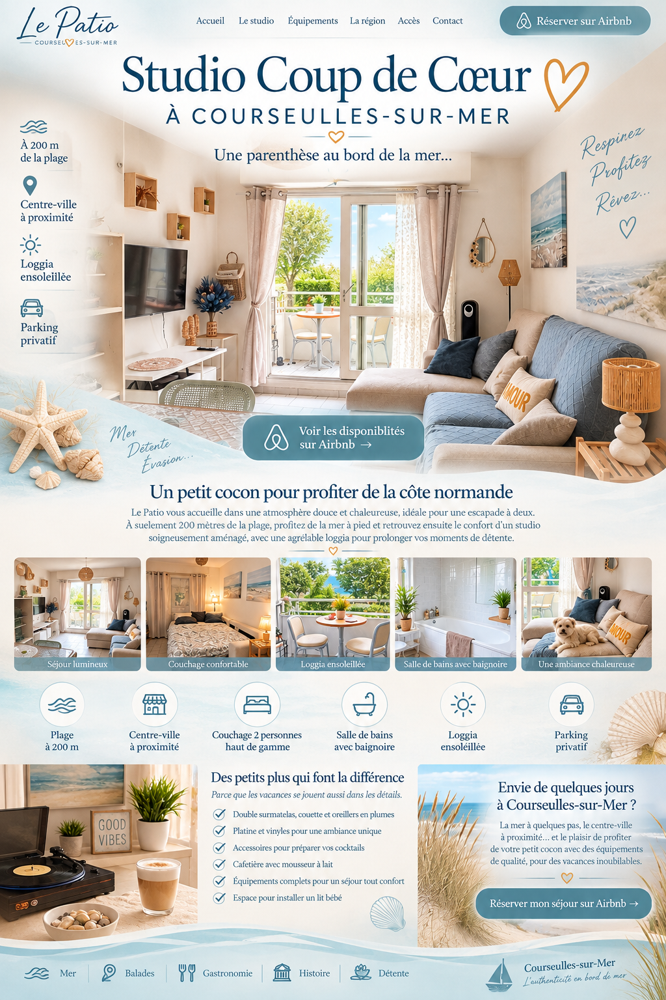

Location studio à Courseulles-sur-Mer à 200 m de la plage
Le Patio est un studio de vacances pour 2 personnes à Courseulles-sur-Mer, en Normandie, à environ 200 mètres de la plage et à proximité du centre-ville. Il dispose d'une loggia, d'un parking privatif, d'une salle de bains avec baignoire et d'un couchage confortable. Réservation et disponibilités sur Airbnb.
